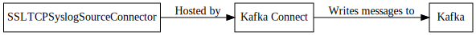

SSLTCPSyslogSourceConnector¶
Connector is used to receive syslog messages via SSL over TCP.
Important
This connector listens on a network port. Running more than one task or running in distributed mode can cause some undesired effects if another task already has the port open. It is recommended that you run this connector in Standalone Mode.
Configuration¶
| Name | Type | Importance | Default Value | Validator | Documentation |
|---|---|---|---|---|---|
| kafka.topic | String | High | Kafka topic to write syslog data to. | ||
| syslog.keystore | String | High | Path to the keystore on the local system containing the ssl certificate for this host. | ||
| syslog.keystore.password | Password | High | Password for the keystore. | ||
| syslog.truststore | String | High | Path to the truststore on the local system containing the ssl certificate for this host. | ||
| syslog.truststore.password | Password | High | Password for the truststore. | ||
| syslog.host | String | High | Hostname to listen on. | ||
| syslog.port | Int | High | 5514 | ValidPort{start=1000, end=65535} | Port to listen on. |
| backoff.ms | Int | Low | 100 | [50,…] | Number of milliseconds to sleep when no data is returned. |
| batch.size | Int | Low | 5000 | The number of records to pull off of the queue at once. | |
| syslog.backlog | Int | Low | 50 | [1,…] | Number of connections to allow in backlog. |
| syslog.charset | String | Low | UTF-8 | Character set for syslog messages. | |
| syslog.max.active.sockets | Int | Low | 0 | Maximum active sockets | |
| syslog.max.active.sockets.behavior | Int | Low | 0 | Maximum active sockets | |
| syslog.reverse.dns.cache.ms | Long | Low | 60000 | The amount of time to cache the reverse lookup values from DNS. | |
| syslog.reverse.dns.remote.ip | Boolean | Low | false | Flag to determine if the ip address of the remote sender should be resolved. If set to false the hostname value will be null. | |
| syslog.shutdown.wait | Long | Low | 500 | The amount of time in milliseconds to wait for messages when shutting down the server. | |
| syslog.structured.data | Boolean | Low | false | Flag to determine if structured data should be used. | |
| syslog.timeout | Int | Low | 0 | Number of milliseconds before a timing out the connection. |
Property based example¶
This configuration is used typically along with standalone mode.
name=connector1
tasks.max=1
connector.class=com.github.jcustenborder.kafka.connect.syslog.SSLTCPSyslogSourceConnector
# The following values must be configured.
kafka.topic=
syslog.keystore=
syslog.keystore.password=
syslog.truststore=
syslog.truststore.password=
syslog.port=
backoff.ms=
batch.size=
syslog.backlog=
syslog.charset=
syslog.max.active.sockets=
syslog.max.active.sockets.behavior=
syslog.reverse.dns.cache.ms=
syslog.reverse.dns.remote.ip=
syslog.shutdown.wait=
syslog.structured.data=
syslog.timeout=
Rest based example¶
This configuration is used typically along with distributed mode. Write the following json to connector.json, configure all of the required values, and use the command below to post the configuration to one the distributed connect worker(s).
{
"name": "connector1",
"config": {
"connector.class": "com.github.jcustenborder.kafka.connect.syslog.SSLTCPSyslogSourceConnector",
"kafka.topic":"",
"syslog.keystore":"",
"syslog.keystore.password":"",
"syslog.truststore":"",
"syslog.truststore.password":"",
"syslog.port":"",
"backoff.ms":"",
"batch.size":"",
"syslog.backlog":"",
"syslog.charset":"",
"syslog.max.active.sockets":"",
"syslog.max.active.sockets.behavior":"",
"syslog.reverse.dns.cache.ms":"",
"syslog.reverse.dns.remote.ip":"",
"syslog.shutdown.wait":"",
"syslog.structured.data":"",
"syslog.timeout":"",
}
}
Use curl to post the configuration to one of the Kafka Connect Workers. Change http://localhost:8083/ the the endpoint of one of your Kafka Connect worker(s).
curl -s -X POST -H 'Content-Type: application/json' --data @connector.json http://localhost:8083/connectors